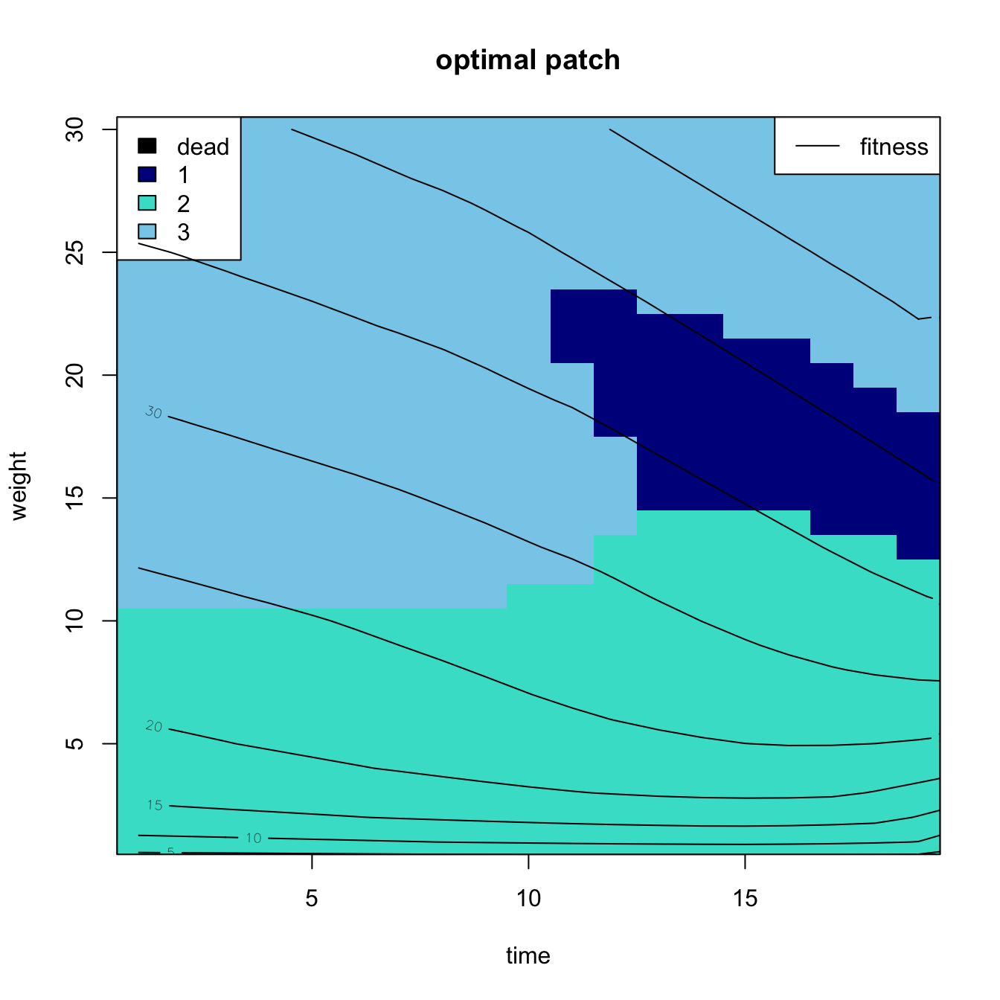

xcrit <- 0
xmax <- 30
xrep <- 4
xclass <- xcrit:xmax
nmass <- length(xclass)
tmax <- 20
times <- 1:(tmax-1)8 Dynamic Optimization and Adaptive Management
Sometimes there isn’t a single best value to choose. Instead, the best choice depends on the state of the organism, the environment, the social group, etc. Dynamic optimization approaches such as dynamic programming provide very powerful tools for such cases. In principle, these methods are very simple to implement. In practice it can be easier to find solutions for dynamic programming models than for many complex but static problems. Dynamic programming simply takes a bit of computer programming and a willingness to deal with some notation.
A full description of the method of stochastic dynamic programming is beyond the scope of this chapter, and the interested reader is referred to both Mangel and Clark (1988) and Clark and Mangel (2000), a pair of excellent books detailing dynamic programming with applications in behavioral ecology and natural resource management. Nonetheless, it is worth outlining the logic of dynamic programming.
The optimal decision in a dynamic programming problem is made by considering a dynamic state valiable. Such a variable might be individual energy stores in a foraging application or household wealth in an economic application. This state variable increases or decreases depending upon your decision and whether or not you are successful once you have made your decision. Whether you decide to pursue the high-risk/high-gain prey or the low-risk/low-gain prey will be a function of how hungry you are. Similarly, whether you liquidate your houshold herd or not will depend critically on whether your household is in imminent danger of extinction. Dynamic programming relies on defining a finite time horizon over which decisions are made. It turns out frequently to be quite easy to determine the optimal choice, given the state variable, in this last time step. For example, consider the case of risky foraging. Say that if at the end of the time horizon, \(T\) (e.g., a week or a month) you will starve to death if your energy stores are below a critical value \(x(T)<x_c\). Your goal is simply to survive to \(T\). In this case, it is obvious that you go for the high-risk/high-reward choice if getting the high return will put you above \(x_c\) but the low return will not. There is no need to be concerned about risk at this point because you are desperate. Similarly, if you are at the end of the time span (i.e., \(T-1\)), comfortably above \(x_c\) and the risk associated with the high-risk/high-reward foraging target is mortality (e.g., in the case where foraging for the high-reward item is dangerous), then you obviously go for the low-risk choice because there is no added benefit to ending way above or just above \(x_c\) – the only thing that matters is whether you survive.
Once you have determined what the optimal decision is for \(T-1\), you then figure out what the best decision is at \(T-2\) and so on. By moving backward through time, you are always making the relatively easy decision of “the last” since your decision at time \(T-2\) can not be affected by your decision at time \(T-1\).
Dynamic programming has been applied to human ecology, though apparently perceptions about it being an advanced or difficult technique have kept the applications to human ecology less numerous than the utility of the technique would warrant. Mace (1993) used dynamic programming to study subsistence decisions among Gabbra pastoralists of Ethiopia. Mace used multiple objective functions: herd offtake, short-term household survival, and long-term household survival. The decision that she investigated was whether or not Gabbra herders should manipulate the breeding rate of their sheep. She found that each different objective function yielded a different prediction: (1) maximizing off-take predicted that breeding should never be slowed, (2) maximizing short-term household survival predicted that breeding should always be slowed, and (3) maximizing long-term household survival predicted that the herd-breeding rate should only be slowed by relatively wealthy households. Her ethnographic data supported pediction 3, supporting the hypothesis that Gabbra herders are maximizing long-term household survival. Mace argues that this is the outcome most clearly consistent with natural selection acting upon decision-making.
Gillis et al. (1995), as discussed in Clark and Mangel (2000), investigated a phenomenon known as “high-grading” in the Oregon sablefish fishery. High-grading is the practice of discarding less valuable fish when they are caught in anticipation of landing more valuable fish later. The discarded fish typically die when they are discarded. Fishing boats high-grade because they can not keep valuable fish if their hold is filled and if it is filled with lower-quality fish (i.e., fish fetching a lower price at market), then they potentially pay a substantial opportunity cost for keeping lower-grade fish. They found that high-grading should become more common in four situations: (1) toward the end of fishing trips, (2) when there is a greater overall availability of fish, (3) when there is a decrease in the trip quota, or (4) where there a decrease in the risk prematurely terminating a fishing trip. The model of Gillis et al. (1995) can be used to estimate bycatch mortality, an important fisheries metric.
8.1 Dynamic Programming
Sometimes there isn’t a single best value to choose. Instead, the best choice depends on the state of the organism, the environment, the social group, etc. Dynamic optimization approaches such as stochastic dynamic programming (SDP) provide very powerful tools for such cases. In principle, these methods are very simple to implement. In practice it can be easier to find solutions for dynamic programming models than for many complex but static problems. Dynamic programming simply takes a bit of computer programming and a willingness to deal with some notation. A full description of the method of stochastic dynamic programming is beyond the scope of this chapter, and the interested reader is referred to both Mangel and Clark (1988) and Clark and Mangel’s (2000) excellent books detailing dynamic programming with applications in behavioral ecology and natural resource management. Nonetheless, it is worth outlining the logic of dynamic programming.
Fitness is a function of both the state variable(s) (which may be vector-valued) that changes with time, \(x_t\), and the control variable \(a_t\). The control variable is the action the actor takes at each time \(t\). The goal is to maximize the fitness function over some specified time horizon ranging from \(t=0\) to \(t=T\). Dynamic programming solves the problem,
\[ \max_A \mathsf{E} \left( F(x_t, a_t) \right). \]
That is, choose the actions \(a_t \in A\) that maximize the expected value of the fitness function over the time period \([0, T]\).
The optimal decision in a dynamic programming problem is made by considering a dynamic state variable. Such a variable might be individual energy stores in a foraging application or household wealth in an economic application. This state variable increases or decreases depending upon the actor’s decision and whether or not the actor is successful once its made a decision. Whether an actor decides to pursue the high-risk/high-gain prey or the low-risk/low-gain prey will be a function of how hungry the actor is. Similarly, whether the actor liquidates its household herd or not will depend critically on whether the household is in imminent danger of extinction. Dynamic programming relies on defining a finite time horizon over which decisions are made. It turns out frequently to be quite easy to determine the optimal choice, given the state variable, in this last time step. For example, consider the case of risky foraging. Say that if at the end of the time horizon, \(T\) (e.g., a week or a month) the actor will starve to death if its energy stores are below a critical value \(x(T)<x_c\). The actor’s goal is simply to survive to \(T\). In this case, it is obvious that the actor will go for the high-risk/high-reward choice if getting the high return will put it above \(x_c\) but the low return will not. There is no need to be concerned about risk at this point because the actor is desperate. Similarly, if the actor is at the end of the time span (i.e., \(T-1\)), comfortably above \(x_c\) and the risk associated with the high-risk/high-reward foraging target is mortality (e.g., in the case where foraging for the high-reward item is dangerous), then the actor obviously goes for the low-risk choice because there is no added benefit to ending way above or just above \(x_c\) – the only thing that matters is whether it survives.
Once we have determined what the optimal decision is for \(T-1\), we then figure out what the best decision is at \(T-2\) and so on. By moving backward through time, we are always making the relatively easy decision of “the last” since your decision at time \(T-2\) can not be affected by your decision at time \(T-1\). This process is known as “backward induction” and it is a powerful tool also used in finding the evolutionary stable strategies in games.
Dynamic programming has been applied to human ecology, though apparently perceptions about it being an advanced or difficult technique have kept the applications to human ecology less numerous than the utility of the technique would warrant. Mace (1993) used dynamic programming to study subsistence decisions among Gabbra pastoralists of Ethiopia. Mace used mutliple objective functions: herd offtake, short-term household survival, and long-term household survival. The decision that she investigated was whether or not Gabbra herders should manipulate the breeding rate of their sheep. She found that each different objective function yielded a different prediction: (1) maximizing off-take predicted that breeding should never be slowed, (2) maximizing short-term household survival predicted that breeding should always be slowed, and (3) maximizing long-term household survival predicted that the herd-breeding rate should only be slowed by relatively wealthy households. Her ethnographic data supported prediction #3, supporting the hypothesis that Gabbra herders are maximizing long-term household survival. Mace argues that this is the outcome most clearly consistent with natural selection acting upon decision-making.
Gillis et al. (1995), as discussed in Clark and Mangel (2000), investigated a phenomenon known as “high-grading” in the Oregon sablefish fishery. High-grading is the practice of discarding less valuable fish when they are caught in anticipation of landing more valuable fish later. The discarded fish typically die when they are discarded. Fishing boats high-grade because they can not keep valuable fish if their hold is filled and if it is filled with lower-quality fish (i.e., fish fetching a lower price at market), then they potentially pay a substantial opportunity cost for keeping lower-grade fish. They found that high-grading should become more common in four situations: (1) toward the end of fishing trips, (2) when there is a greater overall availability of fish, (3) when there is a decrease in the trip quota, or (4) where there a decrease in the risk prematurely terminating a fishing trip. The model of Gillis et al. (1995) can be used to estimate by-catch mortality, an important fisheries metric.
Milner-Gulland and colleagues (1996) model household decision-making among dry-land agropastoralists. They were specifically interested in three questions: (1) why do farmers in dry areas grow maize despite the fact that it performs poorly when water stressed? (2) what determines the fraction of household wealth represented by goats, cattle, or crops? (3) how does the ability to use cattle as draft animals affect the optimal proportions of livestock vs. crops?
Milner-Gulland, Mace, and Scoones (1996) employ an important feature of the dynamic programming approach. Solving the dynamic programming approach allowed the researchers to find the optimal strategies for different wealth states of individual households. However, they were also able to specify suboptimal strategies and explore the consequences of these for household wealth by forward simulation. Furthermore, by simulating all possible paths for a household’s wealth from a given starting point, a household wealth probability distribution for destitution (i.e., zero household wealth) can be calculated.
The model allowed the authors to understand the seemingly paradoxical observation that poor farmers on very dry land will plant maize despite its typically poor performance in dry country rather than millet which does much better. In brief, the only hope for a farmer faced with destitution is to get very lucky and produce a bumper crop of maize. At that level of poverty, a millet crop will not raise the farmer from destitution, so he might as well attempt the maize crop. Similarly, wealthier households should switch to millet because of its lower year-to-year variance. This is an interesting example of Friedman & Savage’s (1948) model for changing risk preference with wealth discussed below.
8.1.1 Example: Clark & Mangel (2000) Patch-Choice Model
The R code for this model is provided by Soetaert and Herman (2009).
First set the parameters
Some more:
npatch <- 3
psurv <- c(0.99,0.95,0.98)
pfood <- c(0.2,0.5,0)
cost <- c(1,1,1)
feedgain <- c(2,4,0)
repr <- c(0,0,4)
f <- matrix(nr=tmax, nc=nmass, 0)
bestp <- matrix(nr=tmax-1,nc=nmass-1,0)
V <- vector(len=npatch)
fend <- 60
# saturation parameter
kx <- 0.25*xmax
# terminal fitness -- type II functional response
f[tmax,] <- fend*(xclass-xcrit)/(xclass-xcrit+kx)Define the fitness function that will be used in the iteration:
fitness <- function(x,t){
xx <- pmin(x,xmax)
xx <- pmax(xx,xcrit)
fitness <- f[t,xx-xcrit+1]
}This runs the main loop. Iterate over time and over size classes.
for(t in rev(times)) #backwards iteration
{
for(x in xclass[-1]) #each class except xcrit
{
dfit <- pmax(0,pmin(x-xrep,repr)) #reproduction
expectgain <- psurv*(pfood*fitness(x-cost+feedgain-dfit,t+1) + (1-pfood)*fitness(x-cost-dfit, t+1))
V <- dfit + expectgain
V[expectgain == 0] <- 0 #dead
f[t,x-xcrit+1] <- max(V) #optimal fitness
bestp[t,x-xcrit] <- which.max(V) #best patch
} # next biomass class x
} # next time tPlot the output using an image and overlay contour lines
image(x=times,y=xclass[-1],z=bestp,ylab="weight",xlab="time",zlim=c(0,3),
main="optimal patch",col=c("black","blue4","turquoise","skyblue"))
box()
legend("topleft",fill=c("black","blue4","turquoise","skyblue"), legend=c("dead","1","2","3"))
contour(x=1:tmax, y=xclass, z=f,add=TRUE)
legend("topright",legend="fitness",lty=1)
8.2 Notes on Human Life-History Decisions
Define the six requirements of an SDP model (from Marescot et al. 2013):
- Define optimization objective
- Define states that determine the system
- Define decision variable
- Build transition model
- Define utility function
- Determine optimal solution
8.2.1 Objective
Maximize lifetime fitness. For first run, simply use number of recruited offspring. Eventually, use the Mangel/Clark approach using maximization of reproductive value, which is equivalent to maximizing \(r\), and therefore incorporating timing. This is very likely to be crucial to the outcomes.
8.2.2 States
Begin with seven states \(\mathbf{X_t} = (n_0, n_1, n_2, n_3, n_4, n_r, x)\), where \(n_i, i \in 0:4\) is the number of children age \(i\), \(n_r\) is the number of children age \(>5\) (i.e., potential recruits), and \(x\) is the energetic state of the individual.
Might want to extend the state-space to count all offspring age less than, say, 15. Not clear if this would be worth the computational costs though since kids over five have a more-or-less constant mortality rate until AFR.
8.2.3 Decision Variable
The decision variable \(A_t\), at least for the simplest model, is really just whether or not to have a child.
8.2.4 Transition Model
Having a baby has a big cost. Having an unweaned kid has a bigger cost (?), having a weaned kid has a lower cost. This may be why expanding the state space might make sense. Older kids cost a lot less and may even subsidize younger kids a bit.
Because this is a finite-time model that we will solve using backward induction, we need to define a terminal fitness function. If a woman survives to the end of her reproductive period, her terminal fitness function is just the sum of the product of the number of offspring she has in all different age classes (\(n_i\)) and the age-specific recruitment probabilities of these offspring (\(\sigma_i\)).
\[ F(\bar{x},T) = \sum_i n_i \sigma_i(\bar{x}) \]
I have made the values of \(\sigma_i\) be dependent on the mother’s energetic state. This increases realism and ensures that the model doesn’t default to maximizing terminal reproductive effort (i.e., mothers engage in a suicidal last bout of reproduction).
8.2.5 Define Utility Function
The problem becomes:
\[ F(\bar{x},t) = \mathrm{max}\{V_0(\bar{x},t), V_1(\bar{x},t)\} \]
where the 0 and 1 subscripts denote the decision to delay or give birth in a the year \(t\) respectively.
Unpacking \(V_0\), we get:
\[ V_0(\bar{x},t) = s(t) \{p_f(\bar{x},t) \mathsf{E}[F(\bar{x}',t+1)] + (1-p_f(\bar{x},t)) \mathsf{E}[F(\bar{x}'',t+1)] \} + (1-s(t)) \sum \sigma_i n_i \]
where \(s(t)\) is the probability that the woman survives from \(t\) to \(t+1\), \(p_f(\bar{x},t)\) is the probability that the woman, with state \(\bar{x}\) forages successfully in that period, \(\mathsf{E}\) is the expectation operator, \(\bar{x}'\) is the value of the woman’s state if she forages successfully that year and \(\bar{x}''\) is the value of the state if she is unsuccessful, and \(F(\bar{x},t+1)\) is fitness given the state \(\bar{x}\) at time \(t+1\).
This means that the formula for \(V_0\bar{x},t)\) is the sum of two things: (1) the expected fitness if the woman survives the interval, and (2) the expected fitness if she does not. In the former case this is the sum of the expected fitness if she is successful in foraging, \(p_f(\bar{x},t) \mathsf{E}[F(\bar{x}',t+1)]\) and if she is not successful, \((1-p_f(\bar{x},t)) \mathsf{E}[F(\bar{x}'',t+1)]\). In the latter case, it is just the survival-weighted sum of her previous reproduction, $_i n_i $.
A comparable formula applies for \(V_1\).
8.2.6 Determine Optimal Solution
Backwards induction of the finite time-horizon model.
8.2.7 The Biology
The model is broadly similar to the model that Marty Anderies used to investigate optimal fertility among the !Kung (Anderies 1996). Anderies used an explicit dynamic model of backload constraint to determine the success of foraging. I think this is a bit too restricted. This is where we need to think hard. How does the state (i.e., the number and age-composition of children, and energy status) affect overall foraging success? Are there other potential key variables of state that are going to determine foraging success?
8.3 Adaptive Management
Greatly expand this. (Holling 1978; Walters 1986)
Adaptive management follows a cycle of planning, doing, evaluating and adjusting.
Steps in Adaptive Management:
- Specify a management objective (e.g., minimize final size of epidemic)
- Identify possible management actions
- Construct alternative models for the different management actions
- Evaluate the success of the chosen management action for achieving objective
- Update management decisions
- Continue measurement, evaluation, modeling alternatives